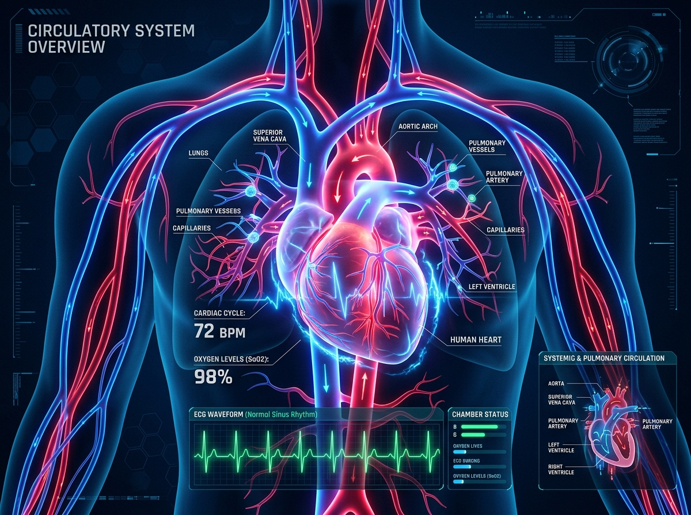

Circulatory System
The Infinite Highway Network
The circulatory system delivers oxygen and nutrients to trillions of cells while carting away metabolic waste. Blood travels continuously through arteries, veins, and microscopic capillaries.
❤️ 4 Chambers
🩸 Red & White Cells
⚡ Electrical Pacemaker